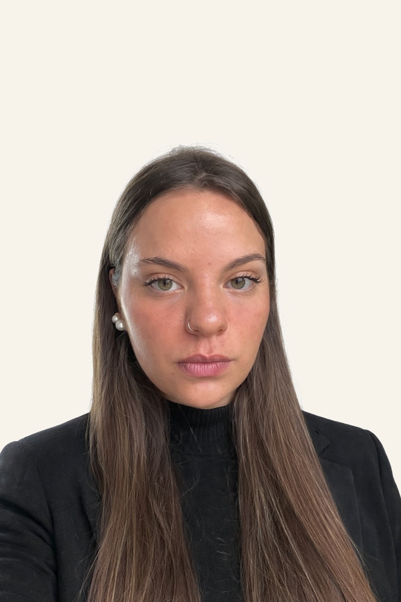

Software Developer Junior
Desarrolladora Web Frontend Junior, con formación en desarrollo de interfaces web utilizando React, JavaScript, TypeScript, HTML y CSS. Experiencia en proyectos académicos y colaborativos, aplicando metodologías ágiles. Perfil proactivo, con capacidad de adaptación y enfoque en la mejora continua.
Algunos de los que voy armando.
Herramienta web para generar paletas de colores aleatorias en formato HEX y HSL, pensada para diseño y desarrollo frontend. Incluye soporte de accesibilidad y feedback visual en tiempo real.
Backend con API REST desplegado en Railway, documentado con Swagger/OpenAPI. Incluye diseño de endpoints, validaciones y manejo de errores.
Single Page Application que permite chatear con Mickey Mouse usando Google Gemini AI. Routing propio con History API, Vercel Serverless Functions como proxy seguro para la API key, y tests unitarios con Vitest.
Sitio web para Nueva Italia Eventos, pensado para presentar el espacio, sus servicios y facilitar el contacto para la organización de eventos.